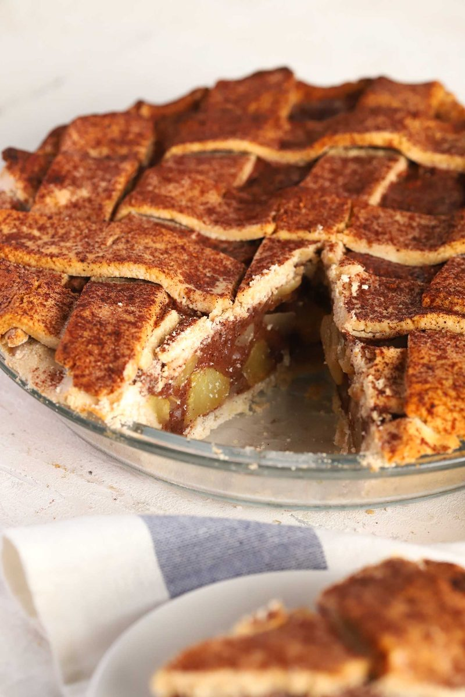
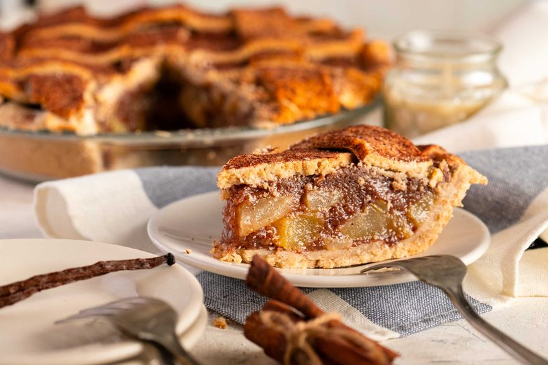
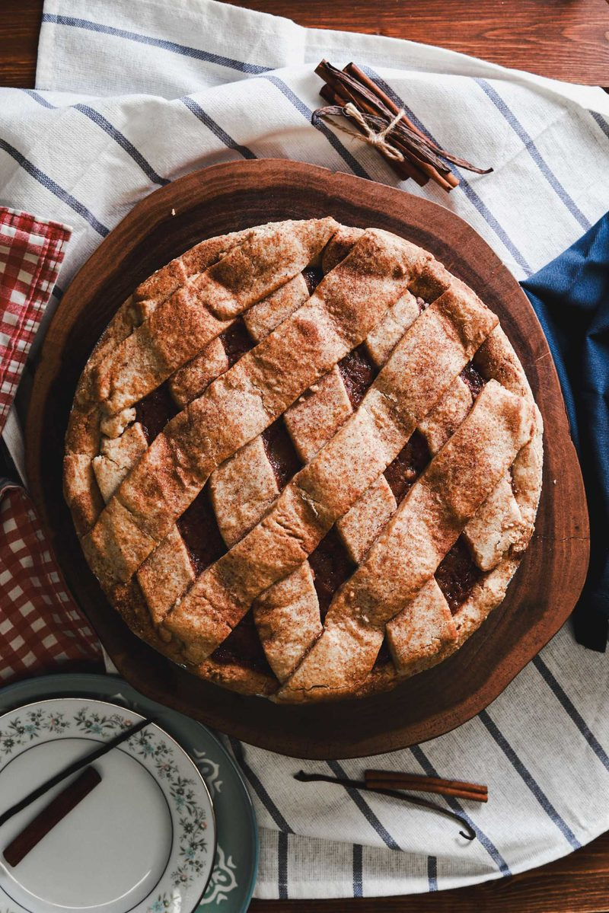

Vegan Gluten-Free Apple Spice Pie
The apple spice pie we make at the bakery, scaled for one 9-inch pie at home — a gluten-free crust that holds a real lattice, and a filling that sets clean instead of turning to soup.
Skip to recipe ↓A good gluten-free pie comes down to two things: a crust that actually holds a lattice, and a filling that sets clean instead of running everywhere when you cut it. Both are harder without gluten — but neither is complicated once you know what each part is doing.
This is the apple spice pie we make at the bakery, scaled down for one 9-inch pie. It’s vegan, it’s gluten-free, and yes, that’s a real woven lattice with no eggs anywhere.
What makes a gluten-free pie work
Cold everything, for the crust
No gluten means the crust gets its flake from cold fat, not from developed dough. Keep the vegan butter cold and in chunks, use ice-cold water, and stop mixing the second it holds together. Warm, overworked GF dough bakes dense.
A little binder, so it can be woven
Gluten is what lets normal pie dough stretch into strips. Here, a small amount of xanthan does that job — just enough give to roll and weave without cracking apart.
Two thickeners, so the filling holds
Apples throw off a lot of liquid. Corn starch does the heavy lifting, and a pinch of xanthan tightens it further so every slice comes out clean. Use the full amount for a firm, bakery-style filling; scale it back for a looser, saucier pie (see the note in the recipe).
A vegan wash, for the shine
That glossy, golden top is a 1:1 maple syrup and olive oil wash — my go-to vegan egg wash. If you want the full breakdown of what browns and shines without eggs, I tested every option here.

Vegan Gluten-Free Apple Spice Pie

Equipment
- 9-inch pie dish
- Rolling pin & parchment paper
- Pastry brush
- Bench scraper or knife (for the strips)
Crust
| Ingredient | Weight | % |
|---|---|---|
| All-purpose gluten-free flour blend | 308 g | 51.2% |
| Cold vegan butter, cubed | 113 g | 18.8% |
| Ice water | 146 g | 24.3% |
| Brown sugar | 30 g | 5.0% |
| Xanthan gum | 2 g (½ tsp) | 0.3% |
| Salt | 3 g (½ tsp) | 0.4% |
| Total | 602 g | 100% |
Our bakery blend is oat, rice, potato starch, and tapioca — but any good all-purpose gluten-free flour blend works here. No xanthan? Swap the ½ tsp xanthan for 1 tsp whole psyllium husk. Psyllium drinks more water, so add a splash more only if the dough feels dry.
Filling
| Ingredient | Weight | % |
|---|---|---|
| Apples, peeled & sliced | 985 g | 70.5% |
| Brown sugar | 170 g | 12.2% |
| Cane sugar | 135 g | 9.7% |
| Corn starch | 55 g | 3.9% |
| Lemon juice | 21 g (1½ tbsp) | 1.5% |
| Cinnamon | 19 g (2½ tbsp) | 1.4% |
| Ground ginger | 4 g (1½ tsp) | 0.3% |
| Nutmeg | ½ tsp | 0.1% |
| Salt | ½ tsp | 0.2% |
| Xanthan gum | 2 g (½ tsp) | 0.1% |
| Lemon extract | a few drops | — |
| Total | ~1,396 g | 100% |
The ½ cup (55 g) corn starch makes a firm, clean-slicing filling like ours. For a softer, saucier pie, use ¼ cup (30 g). The cinnamon is bold on purpose — it’s an apple spice pie — but you can dial it to 1½ tbsp if you prefer it gentler.
Instructions
- Make the crust. Whisk the flour blend, brown sugar, xanthan, and salt. Cut in the cold cubed vegan butter until it looks like coarse crumbs with pea-sized bits. Add the ice water a little at a time, mixing just until the dough holds together — don’t knead it. Split into two discs, one slightly larger than the other. Wrap and chill 30 minutes.
- Make the filling. Peel, core, and slice the apples. Toss them with both sugars, corn starch, cinnamon, ginger, nutmeg, salt, xanthan, lemon juice, and lemon extract until every slice is coated.
- Roll the base. Roll the larger disc between two sheets of parchment to about a 12-inch round. Line a 9-inch dish, letting the edge overhang. Pile in the apples, mounding them slightly in the center.
- Cut the strips. Roll the second disc and cut it into about 10 strips, roughly ¾ inch wide. Keep them cold.
- Weave the lattice. Lay half the strips parallel across the pie, evenly spaced. Fold every other strip back to the center. Lay one strip perpendicular across the flat ones, then unfold the folded strips over it. Now fold back the strips you didn’t touch last time, lay the next perpendicular strip, and unfold. Keep alternating, working out to both edges — that over-under-over is the weave. GF dough is less stretchy than wheat, so work with cold strips and just press any cracks back together with a finger. Once it bakes, no one will know.
- Trim & crimp. Trim the strips and the base to a small overhang, fold the edge under itself, and crimp all the way around.
- Wash & dust. Brush the whole top with a 1:1 maple syrup and olive oil wash, then dust with cinnamon sugar.
- Bake. Bake at 350°F for about 45 minutes, until the crust is deep golden and the filling bubbles up through the lattice (internal temp around 205°F). If the edges brown before the center, tent them with foil.
- Cool — really. Let the pie cool at least 2 to 3 hours before slicing. Gluten-free fillings set as they cool; cut it hot and it’ll run.
Common questions & fixes
- My lattice strips keep cracking. The dough got warm. Chill the strips (and your hands), and patch cracks by pressing the dough back together — GF dough is forgiving that way.
- The filling was runny. Either it was sliced too soon, or the apples were extra juicy — use the full corn starch and give it the full cool.
- The crust browned before the filling cooked. Tent the edges (or the whole top) with foil for the last 15 minutes.
- Which apples? A firm baking apple that holds its shape — Granny Smith, Honeycrisp, or a mix. Skip soft apples that cook to mush.
Make it, slice it clean, and tag me — I want to see that lattice.